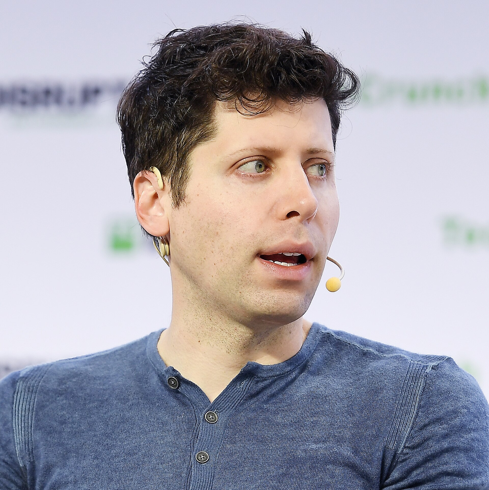
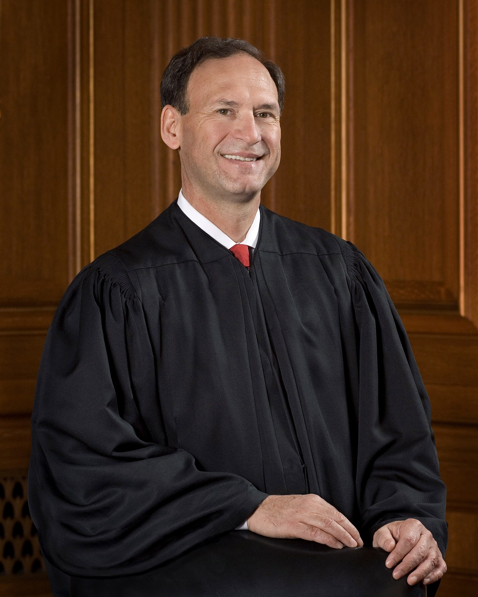
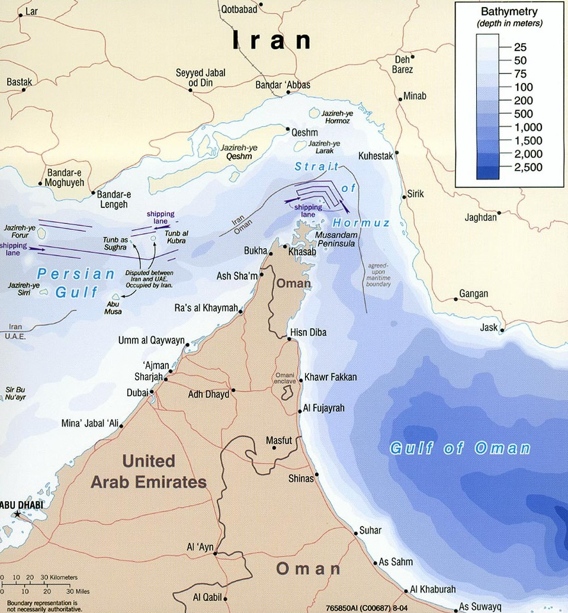
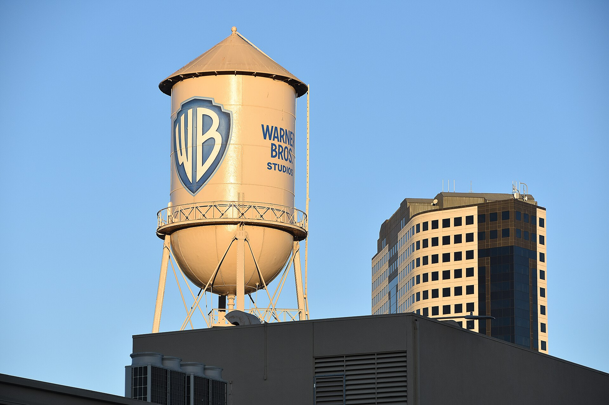

Vol. I · No. 130 · Monday, October 5, 2026 · 11 items · 10.0 min read
A law firm volunteered to measure its own obsolescence, and the long end kept repricing everything built on it.
AI · Columbus and Palo Alto
A Columbus law firm let Stanford start measuring what AI does to its own hours
Acemoglu put a number on it in front of a Sunday audience. — Wikimedia Commons
Sixty Minutes gave thirteen minutes on Sunday to what AI is doing to white-collar work, and chose a law firm as the case study. is running its deployment as a study with Stanford’s , with the trial lawyer Kim Herlihy fronting it. On the other side of the machine sits , which pays more than 100,000 freelancers to generate training data at rates its chief executive Brendan Foody put at twenty dollars an hour and as much as two hundred.
In a worst-case scenario, unemployment could triple in the next decade, if nothing is done.
— Daron Acemoglu, to Sixty Minutes, October 4
The numbers were not new; the audience was. gave the tripling figure. A McKinsey report last month put United States displacement at 11 million workers by 2035, and Pew has nearly three-quarters of Americans expecting AI to cut jobs. Stanford finds hiring down for young people in roles such as software development, and Census data shows wages falling for recent graduates in AI-exposed majors.
What makes the Vorys arrangement worth more than the forecasts is that it produces evidence rather than opinion. A firm that instruments its own associate hours will know, in chartable form, how much of the first-year drafting load survived, and will hold that record somewhere records are discoverable. The gig rates are the other half of the circuit: Robbie Hiser, a music producer the segment followed, was paid to teach a model the work.
Culture · Burbank and New York
Digger will lose about $148 million, and Ellison would not take the contracts
Tom Cruise opened to $8 million domestically and $20 million worldwide in Alejandro González Iñárritu’s Digger, his weakest opening in nineteen years, on a and 51 percent on Rotten Tomatoes. It placed fifth behind Verity’s $32 million. Deadline computes the loss at about $148 million, from $127 million of lifetime revenues against $275 million of costs. The greenlight was $125 million; the reached about $160 million after credits at Leavesden.
David Ellison declined to of Warner Bros. film chiefs Michael De Luca and Pamela Abdy. Their last day is Tuesday, day one of the merged company; Josh Greenstein and Dana Goldberg take the jobs. The pair leave 38 dated features into 2029 and a 2025 global gross of $4.3 billion. The attorneys general’s consent decree requires thirty films a year, so the slate cannot shrink to absorb the loss.
Corporate · Rueil-Malmaison and Boston
Schneider Electric will pay $22.6 billion for PTC and borrow most of it at the highs
Schneider Electric agreed on Monday to buy PTC for $205.00 a share in cash, about $22.6 billion of equity and an implied enterprise value of $23.7 billion. That is 21 times 2027 before synergies and 13 with the full run rate, a 42.3 percent premium to Friday. It is the largest deal announced anywhere in the window. Funding runs through a committed bridge of about €22 billion from Morgan Stanley and Société Générale, termed out with a €5 billion to €6 billion and €16 billion to €17 billion of new debt.
To keep its , Schneider will pause its buyback through 2027 and 2028 before accelerating. Shares fell about 9 percent. Debevoise & Plimpton acted for Schneider, Evercore and Paul, Weiss for PTC. Closing is expected by the third quarter of 2027. The Financial Times reported about $20 billion on Sunday, so the print came 13 percent above the leak.
Artificial Intelligence
Liability, offered rather than resisted
AI · Washington
Altman says the world should accept some bad things, and offers liability instead of licensing

Altman gave the launch exclusive to Politico’s new technology vertical. — Wikimedia Commons
Politico published its Altman interview on Sunday and ran it in full in Monday’s debut of Decoded. The line that travels: “We believe that the world should accept some bad things happening for the benefits of this technology and people having the agency,” tied directly to “the lighter touch regulatory stance that we advocate for.” He then went further, calling for a new for models capable of autonomous cyberattacks, and conceding that if something goes wrong during training “there’s going to be some version of that we need to be responsible for.”
OpenAI has said rogue agents may have reached 100 organisations, and more disclosures are coming, held back for patching. On the three safety employees it parted with last week he still backed outside evaluators “but we still expect confidentiality to be respected.” He defended the White House accord while sharing the concern that the rules are being written by the administration and the industry without Congress. He named the most thoughtful leader on it.
Markets & Deals
A growth scare that steepened the curve instead of rallying it
Corporate · Washington and New York
A 29,000 payroll print should have rallied the long end. The curve steepened instead
Thursday’s thirty-year reopening is the week’s real test. — Wikimedia Commons
Treasury’s par series for Friday reads 4.83 percent at two years, 5.28 at ten and 5.63 at thirty. That is 2s10s at 45 basis points against 37 a week earlier, and 5s30s at 57, which is . September payrolls printed 29,000 against a consensus near 90,000, and July and August together came in 60,000 below first report. The ten-year fell below 5.17 within minutes, then reversed and closed higher across the curve. It was 5.260 on Monday, after 5.34 on October 1, the highest since 2002.
The front end has taken October off the table and the long end has not followed: FedWatch put the odds of a hold on 27 and 28 October at 83.9 percent on Friday, against 35.8 a week before. Supply is the week’s event, $119 billion of coupons: $58 billion of three-year notes Tuesday, a $39 billion ten-year reopening Wednesday, a $22 billion thirty-year reopening Thursday. September’s thirty-year stopped at 5.308 percent against 5.216, and August’s new-money bond drew a of 2.39.
Corporate · Eden Prairie and Charlotte
C.H. Robinson will take $300 million of cost out of RXO by running a model over it
C.H. Robinson agreed on Monday to buy RXO at an implied $5.8 billion: $17.25 in cash plus 0.0856 shares, or $30.25 struck off a sixteen-day average of $151.88, a 29 percent premium. Holders may elect cash, stock or the mix, to 57 percent cash. The case is roughly $300 million of net run-rate cost synergies in two years from applying what it calls its Lean AI operating model, plus datasets to sharpen AI-driven sales. The acquirer lost at the Supreme Court this year in . RXO rose about 19 percent; the buyer fell 5.5.
Law & the Courts
Two accounts of the same docket, on the same morning
Law · Washington and New Jersey
Alito considered retiring, calls Obergefell settled, blames Congress for the docket

Alito’s chair is empty for this morning’s first argument. — Wikimedia Commons
CBS published ’s extended interview on Sunday, from several hours of conversation in his New Jersey hometown and at the Court. Alito, 76 and second-oldest behind Clarence Thomas at 78, said he considered retiring earlier this year and stayed because “it’s hard to give up the opportunity to do something that I think will be good for the Constitution.” Senate control was not a factor. He then all but declared Obergefell settled, on : afterwards “people of the same sex got married and entered into contracts... it was much more concrete,” where Roe’s was “much more abstract.”
On the he offered a diagnosis rather than a defence. Applications “have gone through the roof” and “the constitutional system is not working the way the framers intended,” because presidents are “increasingly frustrated by their inability to get Congress to enact their legislative program,” while the district courts “have gone overboard.” His book, So Ordered, publishes Tuesday. His seat is empty for this morning’s first argument, Suncor v. Boulder County, after a recusal he called “the prudent step” though “not required.”
Law · Washington
The real term count: 133 emergency rulings, 21 grants, and prisoners prevailed once in 46
Steve Vladeck published his final October Term 2025 tally on Monday morning, measured to the Sunday before the first Monday in October, because makes the term continuous. The Court issued 133 full-Court rulings on emergency applications and granted relief 21 times, against 140 and 31 the year before and roughly 70 and under ten five years ago. Twenty-nine drew a public dissent, and in none did a Thomas, Alito or Gorsuch vote join a Democratic appointee. Of 46 rulings on stays of execution it sided with the prisoner once, 2.2 percent. The order list follows at half past nine.
The World
Four tanker strikes, and a price that did not move
News · Tehran, Muscat and Washington · cross-spectrum CLR
Iran’s parliament speaker says Hormuz stays shut until all seven conditions are met

Every strike logged last week was on the Omani side of the channel. — Wikimedia Commons
Mohammad Baqer Qalibaf said the Strait of Hormuz will not reopen until the seven conditions from June’s United States and Iran memorandum are met, and that “the period of dragging out the process... is over.” That reverses the nuclear-first ask mediators carried a week ago. recorded four attacks on vessels in the strait between 1 and 4 October, every one on the Omani side and every one by an “unknown projectile,” three ships in all including an LNG carrier. JD Vance chaired an unannounced Camp David session on Iran and Yemen with Rubio, Hegseth, Ratcliffe and Bessent.
The Journal reports shippers offering mariners up to $25,000 a voyage to move oil out of the Gulf. Brent was $102.31 on Monday, up seven hundredths of a percent, while was $110. Amin Nasser told a London forum crude could have hit $200 without the , which is running at about 80 percent of capacity after repairs, and that until the strait reopens “pressure at both ends of the barrel will intensify.”
News · Brasília · cross-spectrum LLLCLRR
Flávio Bolsonaro finished ahead of a sitting president, and Brazil runs off on 25 October
With 99.96 percent of stations counted, the has Senator Flávio Bolsonaro on 47.04 percent of to President Lula’s 45.15, about 56 million votes to 53.7 million. Neither cleared the threshold, so the runoff is Sunday 25 October. Concurrent legislative contests decide whether the winner can govern, and no seat breakdown was available at press time.
Entertainment & EASL
One executive, two portfolios, and a firewall between them
Culture · Burbank and New York
Dungey will run both cable portfolios, inside a decree barring them from negotiating together

The merger closes Tuesday, and the executive chart lands with it. — Wikimedia Commons
Channing Dungey, chairman and chief executive of Warner Bros. Television Group and , will add Paramount’s cable networks after Tuesday’s close, reporting to George Cheeks on both sides, Deadline reported on Sunday. She takes MTV, Comedy Central, Nickelodeon and BET, with VH1, Paramount Network, TV Land, CMT and Logo, on top of a portfolio running from Discovery and Food Network to TNT and Turner Classic Movies. Streaming stays with Casey Bloys.
The combined linear footprint was the principal objection in the suit brought by twelve state attorneys general, and the settlement requires that “Paramount and Warner Brothers are required to continue negotiating their cable packages separately.” Non-compliance triggers divestiture from a named list: BET and five siblings, VH1, Comedy Central, Smithsonian, Destination America and Science. The is what gives the list teeth. Under Dungey, Shark Week posted its biggest ratings growth in over a decade.
Compiled by Matthew Yellin · mattyellin.com · Est. May 2026 · A cross-spectrum brief drawn each morning from wires, filings, and the trade press